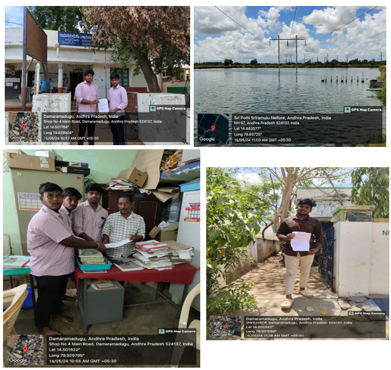

Week-1 (From dt: 14-05-2024 To dt: 18-05-2024)
ON DAY-1:
WENT TO GRAMA/WARD SACHIVALAYAM - I have started “COMMUNITY SERVICE PROJECT” on “AQUACULTURE”. For doing project work without any restrictions, I have met VRO officer Nellore and explained him about the community service project that is assigned to us by the JNTUA to get general awareness on society on behalf of that I have chosen Aquaculture. To do this service project, I have verified Many seafood areas in our locality.
ON DAY-2:
INTRODUCTION TO AQUACULTURE – Aquaculture involves cultivating freshwater, brackish water and saltwater populations under controlled or semi-natural conditions, and can be contrasted with commercial fishing, which is the harvesting of wild fish. Aquaculture can b conducted in completely artificial facilities built on land, as in the case of fish tanks, ponds, aquaponics or raceways, where the living conditions rely on human control such as water quality, feed, temperature.
ON DAY-3:
WHY AQUACULTURE IS IMPORTANT – Aquaculture is also one of the world's most efficient and sustainable methods to produce high-quality protein. The industry has a low carbon footprint and feed conversion ratio as well as high protein and energy retention. Skretting provides innovative and sustainable nutritional solutions that best support the performance of farmed fish and shrimp.
ON DAY-4:
VISITED THE FISH / SEAFOOD MARKET – When I arrived at the fish market, it was overcrowded, and the smell of fish filled the air. This market is on the outskirts of the city where I live. There were various types of fish, and the vendors selling fish of divergent types. Since it was the weekend, people from all walks of life were there.
ON DAY-5:
SURVEY WITH THE FISH MERCHANT – The data were collected with the help of local fishermen, fish farmers, and vendors. The fish in the market comes from ponds, lakes, rivers. The India fish market size reached a value of around INR 1,232 billion in the year 2020. The market is further expected to grow at a CAGR of 10.5% between 2023 and 2028 to reach a value of almost INR 2,243 billion by 2026. The India fish market is driven by the huge export potential it offers, provide environmental baselines for evaluating ecosystem impacts of human-made and natural disasters.
